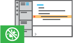

Free/Libre Open Source Software Binaries of VSCode

The all-in-one kit for developers!


Platforms
Available on any platform
VSCodium is available on windows, Mac OS and Linux.
Ready for any language
It natively supports a wide range of languages, and advanced support can be added through its powerful extensions.

Features
An editor that rocks!
IntelliSense Intelligent code completion
|
Go beyond syntax highlighting and autocomplete with IntelliSense, which provides smart completions based on variable types, function definitions, and imported modules.
|
Advanced and extensible Debugger
|
Print statement debugging is a thing of the past.
Debug code right from the editor. Launch or attach to your running apps and debug with break points, call stacks, and an interactive console. |
 |
Native GIT Support

|
Git commands built-in.
Working with Git and other SCM providers has never been easier. Review diffs, stage files, and make commits right from the editor. Push and pull from any hosted SCM service. |
Customizable with powerful Extensions
|
Extensible and customizable.
Want even more features? Install extensions to add new languages, themes, debuggers, and to connect to additional services. Extensions run in separate processes, ensuring they won't slow down your editor. |

|

Why
Why Does This Exist
VSCode is a powerful advanced text editor developed by Microsoft using the Electronjs framework.
VSCode is a Free and Open Source software released under the MIT license, but it is only available as source code from its official Github repository
Microsoft then distributes its own ready to use binaries called Visual Studio Code on the official project website.
Even if the source code of VSCode is released under a Free and Open Source license, Microsoft’s downloads of Visual Studio Code are licensed under this not-FLOSS license and contain telemetry/tracking. According to this comment from a Visual Studio Code maintainer:
When we [Microsoft] build Visual Studio Code, we do exactly this. We clone the vscode repository, we lay down a customized product.json that has Microsoft specific functionality (telemetry, gallery, logo, etc.), and then produce a build that we release under our license.
When you clone and build from the vscode repo, none of these endpoints are configured in the default product.json. Therefore, you generate a “clean” build, without the Microsoft customizations, which is by default licensed under the MIT license
The VSCodium project exists so that you don’t have to download+build from source. This project includes special build scripts that clone Microsoft’s vscode repo, run the build commands, and upload the resulting binaries for you to GitHub releases. These binaries are licensed under the MIT license. Telemetry is enabled by a build flag which we do not pass.
If you want to build from source yourself, head over to Microsoft’s vscode repo and follow their instructions. This repo exists to make it easier to get the latest version of MIT-licensed VSCode.
More Info
For more information on getting all the telemetry disabled and tips for migrating from Visual Studio Code to VSCodium, have a look at this Docs page.
Install
Download/Install from Binary
Download/Install from a Package Manager
Install with Brew (Mac)
If you are on a Mac and have Homebrew installed:
brew cask install vscodium
Note: if you see “App can’t be opened because it is from an unidentified developer” when opening VSCodium the first time, you can right-click the application and choose Open. This should only be required the first time opening on a Mac.
Install with Chocolatey (Windows)
If you use Windows and have Chocolatey installed (thanks to @Thilas):
choco install vscodium
Install with Package Manager (Linux)
Parrot OS:
VSCodium is pre-installed in Parrot OS.
In case you don’t find it by default, you can retrieve it from the official Parrot repo
sudo apt update &&
apt install vscodium
Debian / Ubuntu (deb package):
Add the GPG key of the repository:
wget -qO - https://gitlab.com/paulcarroty/vscodium-deb-rpm-repo/raw/master/pub.gpg | sudo apt-key add -
Add the repository:
echo 'deb https://gitlab.com/paulcarroty/vscodium-deb-rpm-repo/raw/repos/debs/ vscodium main' | sudo tee --append /etc/apt/sources.list
Update then install vscodium:
sudo apt update && sudo apt install vscodium
Fedora / Centos / OpenSUSE (rpm package):
Add the GPG key of the repository:
rpm --import https://gitlab.com/paulcarroty/vscodium-deb-rpm-repo/raw/master/pub.gpg
Add the repository:
-
Fedora/RHEL:
dnf config-manager --add-repo https://gitlab.com/paulcarroty/vscodium-deb-rpm-repo/raw/repos/rpms/ -
openSUSE/SUSE:
zypper addrepo -t YUM https://gitlab.com/paulcarroty/vscodium-deb-rpm-repo/raw/repos/rpms/ vscodium_mirror_on_gitlab
Install the software:
- Fedora/RHEL:
dnf install vscodium - OpenSUSE/SUSE:
zypper in vscodium
Flatpak Option (Linux)
VSCodium is not available as a Flatpak app, but @amtlib-dot-dll has done significant work to package up the open source build of Visual Studio Code without telemetry, very similarly to VSCodium. That package is available here and the build repo is here.
Migrate
Migrate from Visual Studio Code
VSCodium (and a freshly cloned copy of vscode built from source) stores its extension files in ~/.vscode-oss. So if you currently have Visual Studio Code installed, your extensions won’t automatically populate. You can reinstall your extensions from the Marketplace in VSCodium, or copy the extensions from ~/.vscode/extensions to ~/.vscode-oss/extensions.
Visual Studio Code stores its keybindings.json and settings.json file in the these locations:
- Windows:
%APPDATA%\Code\User - macOS:
$HOME/Library/Application Support/Code/User - Linux:
$HOME/.config/Code/User
You can copy these files to the VSCodium user settings folder:
- Windows:
%APPDATA%\VSCodium\User - macOS:
$HOME/Library/Application Support/VSCodium/User - Linux:
$HOME/.config/VSCodium/User
To copy your settings manually:
- In Visual Studio Code, go to Settings (Command+, if on a Mac)
- Click the three dots
...and choose ‘Open settings.json’ - Copy the contents of settings.json into the same place in VSCodium
How do I press and hold a key and have it repeat in VSCodium (Mac)?
This is a common question for Visual Studio Code and the procedure is slightly different in VSCodium because the defaults path is different.
$ defaults write com.visualstudio.code.oss ApplePressAndHoldEnabled -bool false
How do I open VSCodium from the terminal?
-
Go to the command palette (View Command Palette…) - Choose
Shell command: Install 'vscodium' command in PATH.

This allows you to open files or directories in VSCodium directly from your terminal:
~/in-my-project $ vscodium . # open this directory
~/in-my-project $ vscodium file.txt # open this file
Feel free to alias this command to something easier to type in your shell profile (e.g. alias code=vscodium).